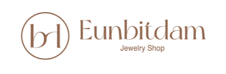
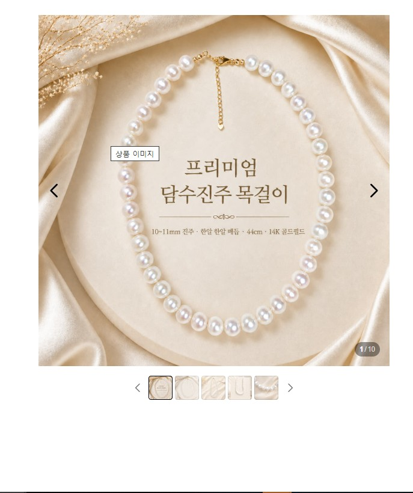
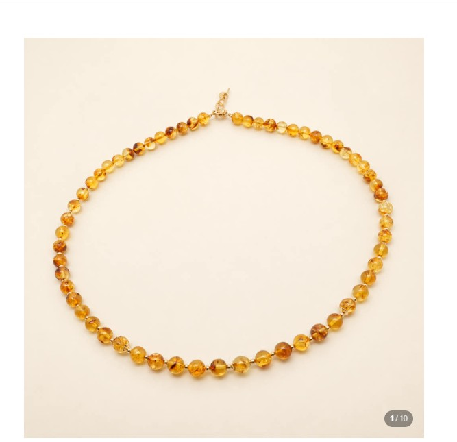
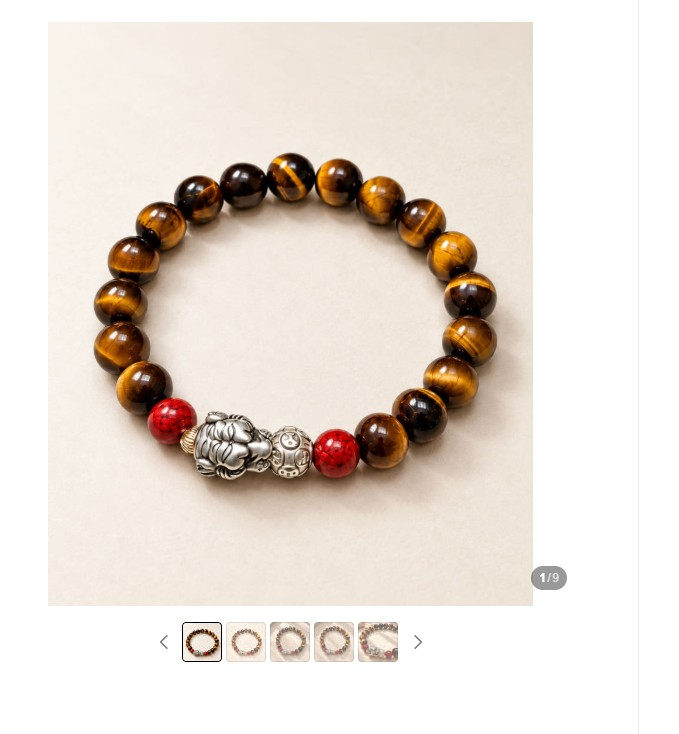
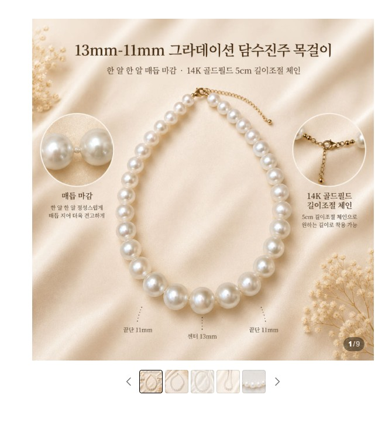
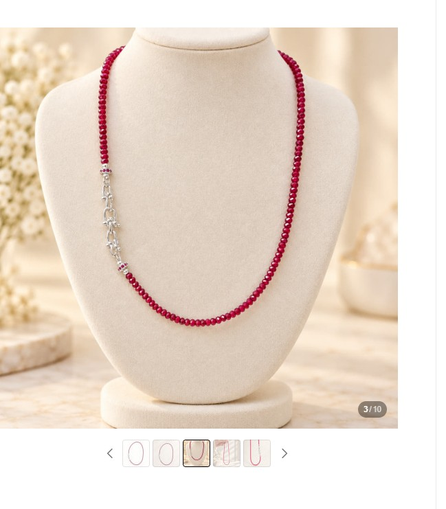

담수진주 비드목걸이 10~11mm
진주매듭 · 14K 골드필드 · 44cm
416,000원상품 보기 →현재 홈페이지를 새롭게 단장하고 있습니다.
일부 메뉴와 구매 기능은 순차적으로 연결 중이며,
상품 구매는 네이버 스마트스토어에서 가능합니다.


은빛담의 새로운 주얼리를 만나보세요.
진주매듭 · 14K 골드필드 · 44cm
416,000원상품 보기 →
14K 골드필드 · 원석 비즈
144,000원상품 보기 →
헤마타이트 · 실버 룬델 · 천연 원석 남성 밴딩팔찌

약 13~11mm · 44cm
496,000원상품 보기 →
실버 클립 잠금 · 42cm
140,000원상품 보기 →좋은 원석을 고르고, 정성스럽게 엮어 하나의 주얼리가 되기까지. 은빛담은 자연의 아름다움과 사람의 이야기를 함께 담습니다.
브랜드 스토리 보기 →땅속 깊은 곳의 결정, 오래전 나무가 남긴 수지, 물속에서 한 겹씩 빚어진 진주. 사람들은 오래전부터 그 빛과 색에 용기와 사랑, 평온과 행운의 이야기를 담아왔습니다.
아래의 ‘전해지는 상징’은 역사적·문화적 전승과 원석 문화에서 전해지는 의미이며 의학적 효능을 뜻하지 않습니다.
거친 갈색 원석을 자르고 연마하면 황금빛 결이 드러납니다. 빛이 고양이 눈처럼 움직이는 샤토얀시 때문에 오래전부터 통찰과 용기, 보호의 상징으로 이야기되어 왔습니다.
전해지는 상징 · 용기 · 보호 · 통찰 · 결단암석 안에서 자라는 보랏빛 수정 결정. 이름은 고대 그리스어와 연결되며, 옛사람들은 절제와 맑은 정신을 상징하는 돌로 여겼습니다.
전해지는 상징 · 평온 · 절제 · 지혜 · 안정암석 속 검붉은 결정은 불과 생명력을 떠올리게 했습니다. 여행자의 무사 귀환과 떨어진 사람의 재회를 기원했다는 이야기도 전해집니다.
전해지는 상징 · 열정 · 우정 · 약속 · 보호자연 상태에서는 길고 얇은 칼날 같은 결정으로 발견됩니다. 한 결정 안에서도 남색과 청색의 농도가 달라 각 원석이 서로 다른 표정을 가집니다.
전해지는 상징 · 소통 · 균형 · 평온 · 자기표현청록에서 깊은 블루까지 다양한 색을 보입니다. 다른 광물과 혼동되기 쉬워 ‘속이다’라는 뜻의 그리스어에서 이름이 유래한 것으로 알려져 있습니다.
전해지는 상징 · 영감 · 표현 · 긍정 · 새로운 시작그린과 핑크, 붉은색 등 놀라울 만큼 다양한 색을 지닌 원석입니다. 핑크는 사랑과 따뜻함, 그린은 성장과 활력의 상징으로 이야기되어 왔습니다.
전해지는 상징 · 사랑 · 성장 · 활력 · 조화투명한 수정 안에 금빛 실처럼 보이는 루틸 결정이 지나갑니다. 모든 돌의 선과 밀도가 달라 같은 무늬를 찾기 어렵습니다.
전해지는 상징 · 행운 · 번영 · 목표 · 자신감광물이 아니라 오래전 나무의 수지가 긴 시간에 걸쳐 변화한 유기질 보석입니다. 따뜻한 황금빛 때문에 태양과 보호의 상징으로 여겨졌습니다.
전해지는 상징 · 보호 · 따뜻함 · 행운 · 긍정고대부터 장식품과 인장에 사용된 붉은 주황빛 원석입니다. 강렬한 색에서 용기와 활력, 행동력을 떠올렸습니다.
전해지는 상징 · 용기 · 활력 · 창조성 · 행동이름은 ‘물’과 ‘바다’를 뜻하는 라틴어에서 유래합니다. 항해자들이 안전한 여행을 기원하며 지녔다는 이야기가 전해집니다.
전해지는 상징 · 평온 · 희망 · 용기 · 여행자의 보호강렬한 붉은빛으로 오랫동안 귀하게 여겨진 보석입니다. 여러 문화에서 생명력과 사랑, 용기의 이미지와 연결되어 왔습니다.
전해지는 상징 · 사랑 · 열정 · 용기 · 생명력진주는 땅속이 아닌 물속 생명체 안에서 만들어집니다. 층이 오랜 시간 겹쳐져 부드러운 광택이 생기며, 자연이 남긴 미세한 차이까지 각 진주의 개성이 됩니다.
전해지는 상징 · 순수 · 지혜 · 사랑 · 귀함